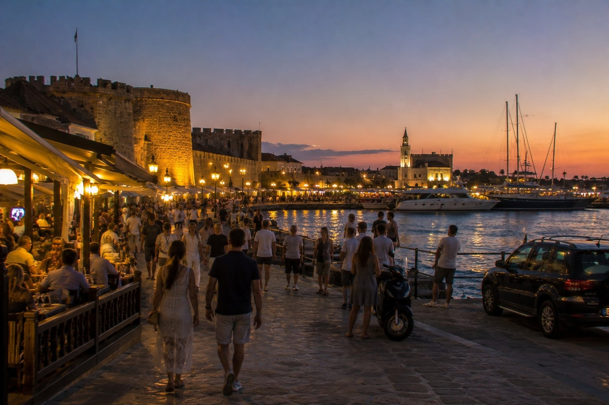

1
Redo för publicering
Hög prio · 154
Par/senior
rhodos
Snabb resplan — 7 dagar på Rhodos
bilder/web-ready/rhodos/snabb-resplan-7-dagar-pa-rhodos.jpg
bilder/web-ready/rhodos/redo/snabb-resplan-7-dagar-pa-rhodos.jpg
Prompt
Publishing metadata
- Prioritet
- Hög (154) · bas 10 | startsida +130 | 3 träffar i sidtext +6 | lång sektion +8
- Alt
- Snabb resplan — 7 dagar på Rhodos i Rhodos med människor och realistisk resemiljö
- Caption
- Snabb resplan — 7 dagar på Rhodos i Rhodos
- SEO
- En realistisk resebild från Snabb resplan — 7 dagar på Rhodos i Rhodos. Bilden visar Snabb resplan — 7 dagar på Rhodos i Rhodos under relevant resesäsong med naturligt folkliv och tydliga platsdetaljer som gör reseguideavsnittet mer visuellt trovärdigt.
- Target
- https://rhodos.se/ / snabb-resplan-7-dagar-pa-rhodos